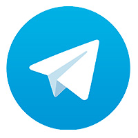
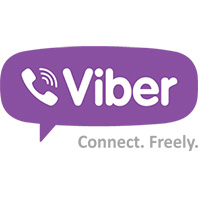
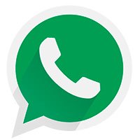

Telegram
Telegram. Не самый распространенный мессенджер на территории России, хотя тенденция по количеству установок на мобильные устройства положительная. Отчасти это наблюдается потому, что автором данной прогарммы является Павел Дуров – небезызвестный основатель социальной сети ВКонтакте. Telegram позиционируется как один из самых безопасных мессенджеров, работающий по специальному протоколу шифрования данных. Поддерживает все основные функции. Очень прост в освоении и быстр. Само собой, мессенджер русифицирован, что называется, «от и до». Хотя существуют и англоязычные версии.

Viber
WhatsApp. Приложение, недавно приобретенное социальной сетью Facebook. С одной стороны, это оттолкнуло многих пользователей, которые стали опасаться за секретность личной переписки, а с другой – напротив – приобрело множество поклонников, так как теперь WhatsApp имеет интеграцию с мировой социальной сетью от Цукерберга. Отличительной особенностью данного мессенджера является то, что он работает исключительно с текстовыми сообщениями и файлами, то есть превратить его в «звонилку» не получится при всем желании. Но, как ни странно, этот минимализм пришелся по вкусу миллионам пользователям, так что в 2015 году WhatsApp был признан лидером, обогнав Viber, который держал пальму первенства в 2014 году. Программа местами русифицирована несколько коряво, тем не менее, это абсолютно не мешает пользоваться ею.

WhatsApp
WhatsApp. Приложение, недавно приобретенное социальной сетью Facebook. С одной стороны, это оттолкнуло многих пользователей, которые стали опасаться за секретность личной переписки, а с другой – напротив – приобрело множество поклонников, так как теперь WhatsApp имеет интеграцию с мировой социальной сетью от Цукерберга. Отличительной особенностью данного мессенджера является то, что он работает исключительно с текстовыми сообщениями и файлами, то есть превратить его в «звонилку» не получится при всем желании. Но, как ни странно, этот минимализм пришелся по вкусу миллионам пользователям, так что в 2015 году WhatsApp был признан лидером, обогнав Viber, который держал пальму первенства в 2014 году. Программа местами русифицирована несколько коряво, тем не менее, это абсолютно не мешает пользоваться ею.

ICQ
ICQ Mobile. Пожалуй, самая «древняя» программа для обмена текстовыми сообщениями. Собственно, с нее все и начиналось. За годы своего существования легендарная «аська» успела перекочевать на мобильные платформы, где прочно обосновалась благодаря своей простоте и компактности, чего, например, нельзя сказать об ее ПК-шном собрате. Он перегружен рекламой и функциями сомнительного достоинства. В настоящий момент отходит на второй или даже третий план, но по-прежнему имеет в базе миллионы абонентов. Можно подключать также аккаунты практически из всех популярных социальных сетей. Конечно, поддерживается как работа с собственно текстами, так и файлами.